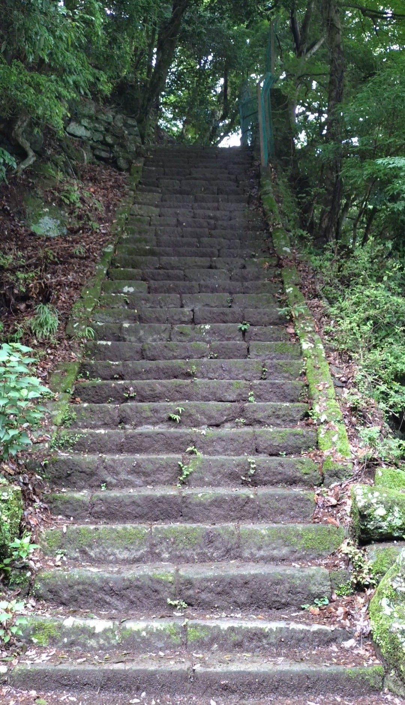
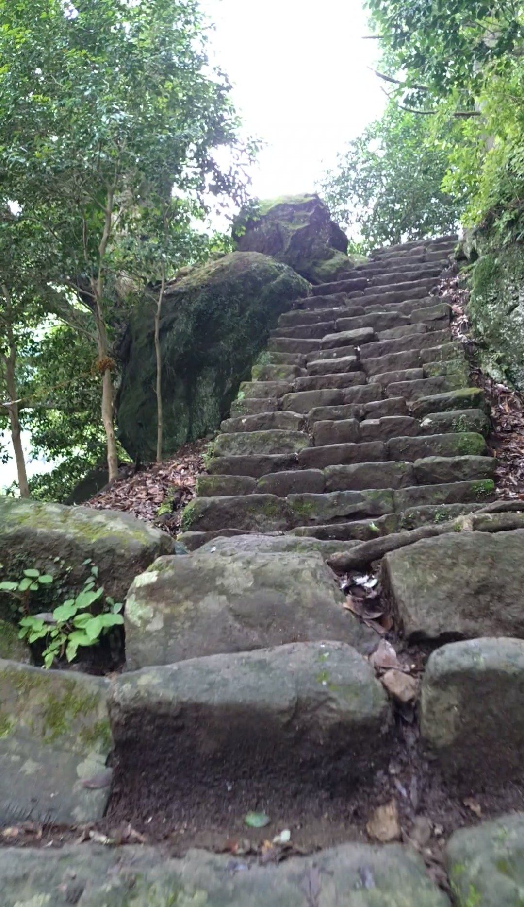
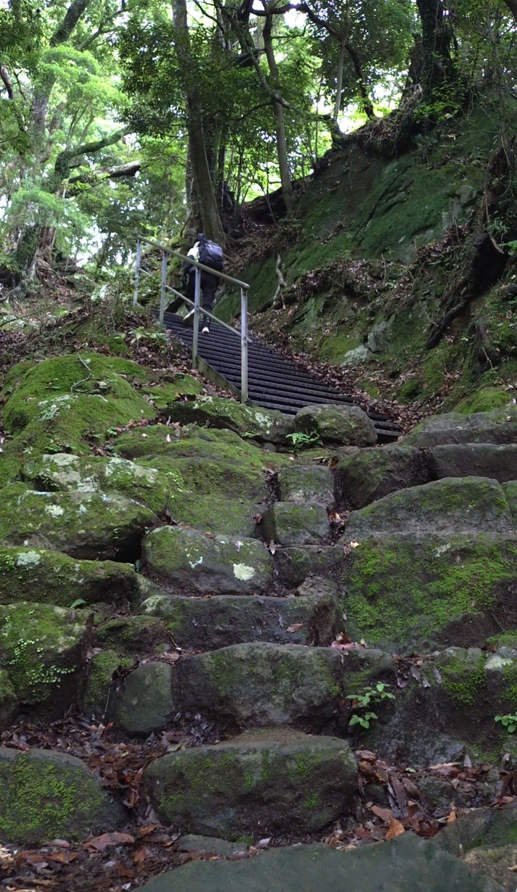
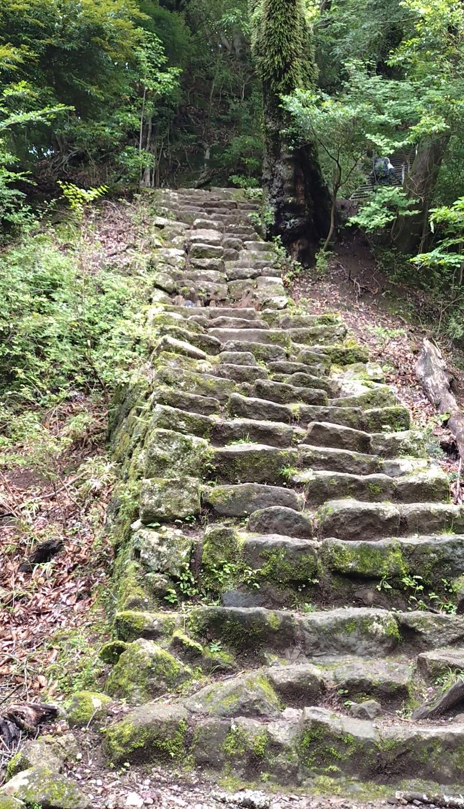
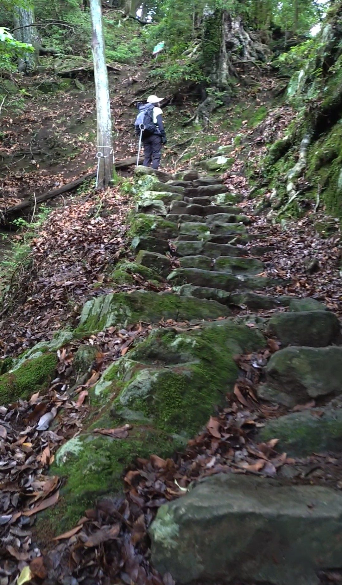
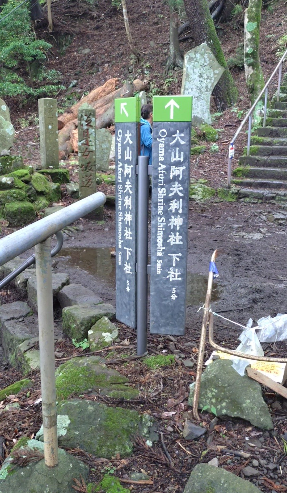

こま参道を登り切った先から、次の目標は大山阿夫利神社の下社です。ここへ向かうルートは男坂と女坂の2択があり、今回は男坂ルートを選びました。神奈川中央交通バスのバス停「大山ケーブル」からこま参道を歩いて約20分。石段のような形をしている箇所も多いのですが、実際のところは岩場の登山という感覚に近い、かなり本格的なルートです。前日の雨でぬかるんでおり、難易度はさらに上がっていました。
神奈川中央交通バス「大山ケーブル」バス停下車、こま参道を経由して徒歩約20分。こま参道の終点からさらに進むと男坂・女坂の分岐があります。男坂は急勾配の本格的な登山ルートです。足腰や体力に不安がある方は女坂またはケーブルカーの利用をおすすめします。
登山装備が必須です。グリップの強い登山靴、トレッキングポール、十分な水分補給を用意してください。雨上がりは岩場がぬかるんで非常に滑りやすくなります。慎重に一歩一歩確認しながら登りましょう。体力と覚悟を持って臨んでください。
男坂の入口に立って見上げると、「これは階段なのか？」という気持ちになります。垂直な壁に岩がせり出しているように見えて、登山道というより崖に近い印象です。石段の形はしているものの、一般的な階段のイメージとはかなり異なります。前日の雨でぬかるんでいることもわかり、覚悟を決めて臨みました。

意を決して登り始めます。一段一段の高さが高く、手を使いたくなる場面もあります。足場を確かめながら、慎重に体重を移していきます。急勾配とぬかるみが重なって、序盤から全神経を集中させる登りになりました。

きつい登りの中で、周囲の自然が目に入ってきます。前日の雨のせいか、木々や苔がみずみずしく輝いていて、緑の濃さが際立っています。過酷な登りの合間に視線をそらすと、そのみずみずしさに少し癒されました。

途中、岩が横に整列していて、石段に近い形をしている箇所があります。ここは比較的足を置きやすく、リズムよく登れます。男坂のルートはこうした整然とした箇所と、ランダムな岩場が交互に現れる構成になっています。

一方で、岩がランダムに並んだ岩場のような箇所も多くあります。どこに足を置くか、毎歩判断しながら登る必要があります。こうした箇所では特に慎重さが求められます。

20分ほどかけて、なんとか登り切りました。たどり着いた場所は、男坂と女坂が合流する地点のようでした。下り口の案内も出ていて、ここが分岐点になっているようです。達成感はありましたが、それ以上に「無事に登れた」という安堵感の方が強かったです。女坂やケーブルカーという選択肢がある中で、あえて男坂を選ぶ方はしっかりとした装備で臨んでください。
